Classes
0 class(es) passed
1 class(es) failed, 0 others
Tests
0 test(s) passed
1 test(s) failed, 0 others
Steps
99 log(s) passed
6 log(s) failed, 1 others
Classes
-
Running on Chrome Jan 25, 2022 12:41:44 failJan 25, 2022 12:41:44 Jan 25, 2022 13:24:15 0h 42m 30s+611ms
-
testJan 25, 2022 12:41:44 0h 42m 30s+598ms fail
-
clickloginJan 25, 2022 12:41:51 0h 42m 23s+969ms fail
Status Timestamp Details check_circle 12:42:00 PM enterData
Entered Value "useremailsharique6@yahoo.com" in yahooemail
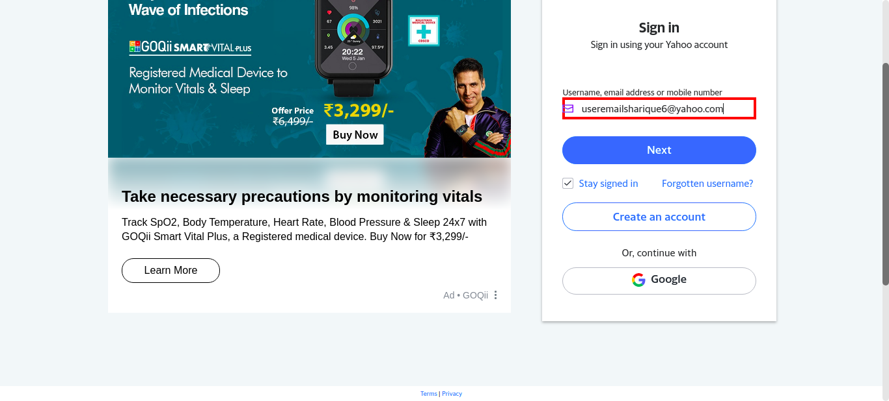check_circle 12:42:15 PM enterData
Entered Value "ugPmTZh7:)Q+-2d" in yahoopasswd
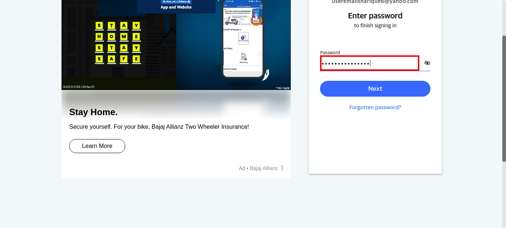check_circle 12:44:13 PM pressKey
TAB key pressed
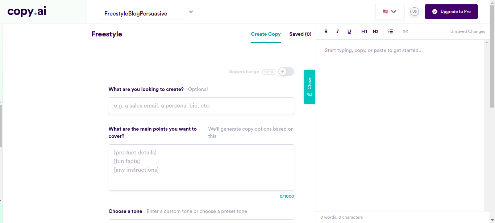check_circle 12:44:39 PM enterData
Entered Value "There's a saying that says ""men are dogs"", but I'm not so sure" in BlogFreestyleSentence
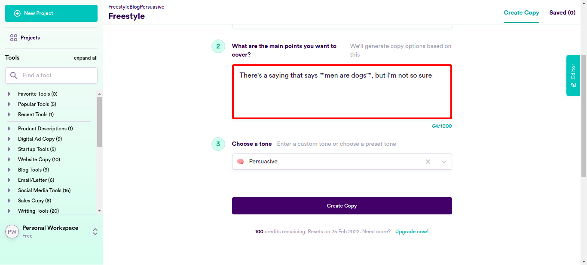check_circle 12:45:03 PM enterData
Entered Value "When was the last time you met a man who was vain?" in BlogFreestyleSentencecheck_circle 12:45:28 PM enterData
Entered Value "When it comes to being vain I don’t think males come to mind very often" in BlogFreestyleSentencecheck_circle 12:45:52 PM enterData
Entered Value "Vanity is one of the most active powers of the female mind" in BlogFreestyleSentencecheck_circle 12:46:16 PM enterData
Entered Value "most women love bad boys and celebrities" in BlogFreestyleSentencecheck_circle 12:46:41 PM enterData
Entered Value "women prefer men who are rich or powerful over good looking men?" in BlogFreestyleSentencecheck_circle 12:47:06 PM enterData
Entered Value "money is the key to women's happiness, but what's more interesting is that money can make a woman do the craziest things." in BlogFreestyleSentence
check_circle 12:47:31 PM enterData
Entered Value "A hot, good looking guy with a minuscule bank account who can’t hold his liquor, or a self-made millionaire with a house in the Hamptons, I think every woman will go for the second. " in BlogFreestyleSentence
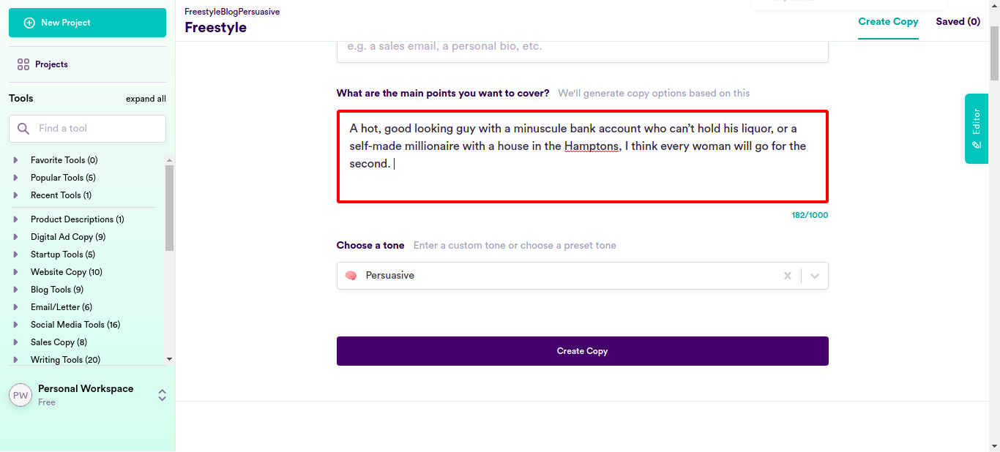check_circle 12:47:55 PM enterData
Entered Value "women judge men within seconds of seeing them and they judge every single they meet." in BlogFreestyleSentence
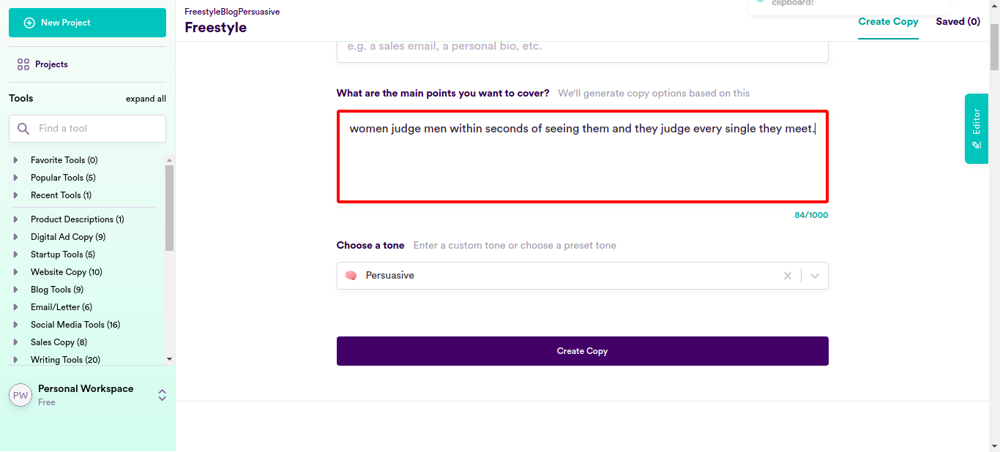check_circle 12:48:20 PM enterData
Entered Value "Sports like shooting and weight-lifting are practically boys' club." in BlogFreestyleSentencecheck_circle 12:48:45 PM enterData
Entered Value "there are certain sports that are just not for women, especially tennis and also golf should be avoided by women." in BlogFreestyleSentencecheck_circle 12:49:09 PM enterData
Entered Value "Women belong in the home, in their proper role of building stable families with strong marriages and raising children." in BlogFreestyleSentencecheck_circle 12:49:34 PM enterData
Entered Value "Men prefer to drive rather than ride to a destination." in BlogFreestyleSentencecheck_circle 12:49:58 PM enterData
Entered Value "women prefer to ride in a vehicle instead of driving themselves." in BlogFreestyleSentencecheck_circle 12:50:22 PM enterData
Entered Value "Men, on the other hand, tend not to spend much thought or effort into what they wear." in BlogFreestyleSentence
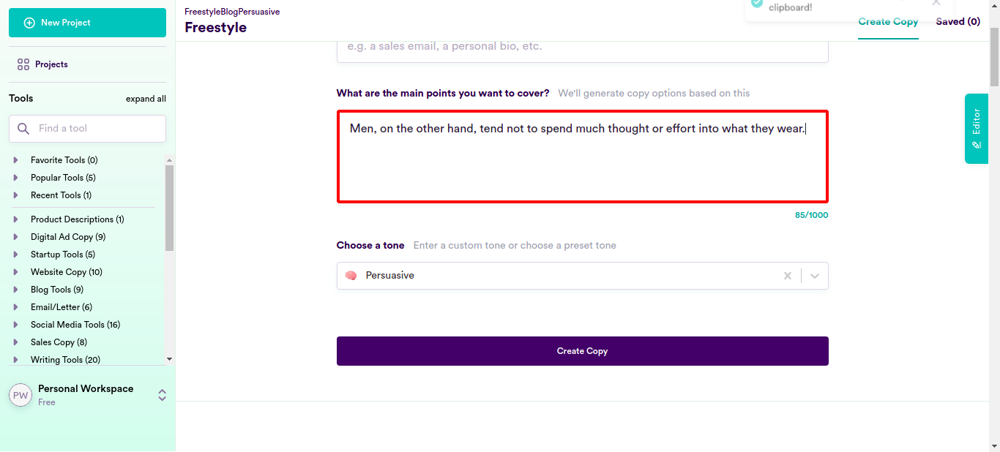check_circle 12:50:47 PM enterData
Entered Value "Men do not know much about shopping for women." in BlogFreestyleSentencecheck_circle 12:51:11 PM enterData
Entered Value "women belong in the kitchen, and should not be allowed to do jobs like plumber because it is a man’s job" in BlogFreestyleSentencecheck_circle 12:51:36 PM enterData
Entered Value "women are made for cooking and having babies." in BlogFreestyleSentence
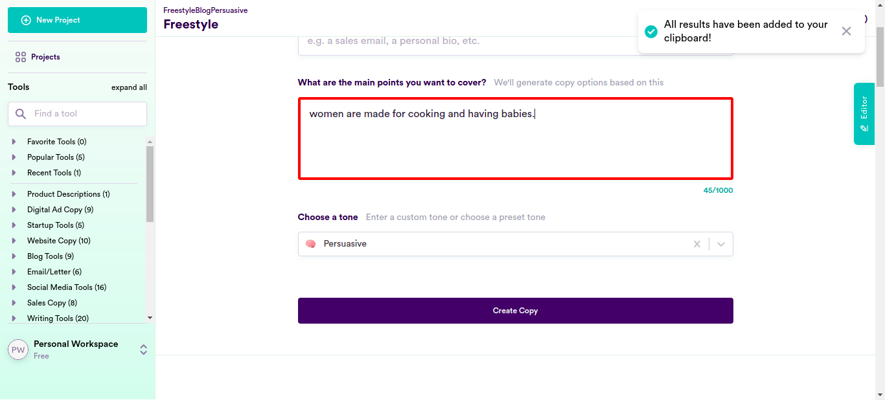check_circle 12:52:00 PM enterData
Entered Value "modern society isn't ideal for a woman's body." in BlogFreestyleSentencecheck_circle 12:52:25 PM enterData
Entered Value "If you didn’t support him, you apparently lacked spine and masculinity." in BlogFreestyleSentencecheck_circle 12:52:49 PM enterData
Entered Value "less pay is reasonable for women in construction, mining and factory work." in BlogFreestyleSentencecheck_circle 12:53:14 PM enterData
Entered Value "women are just not that interested in working in construction, mining or factory work" in BlogFreestyleSentencecheck_circle 12:53:38 PM enterData
Entered Value "There is nothing wrong with women earning less than men for doing the same job" in BlogFreestyleSentencecheck_circle 12:54:03 PM enterData
Entered Value "the man takes out the trash and the woman does the laundry or cooks a meal for her family." in BlogFreestyleSentencecheck_circle 12:54:28 PM enterData
Entered Value "Women want a guy with a nice butt, but only if he doesn’t have body odor" in BlogFreestyleSentencecheck_circle 12:54:52 PM enterData
Entered Value "women fall in love with shoes every week" in BlogFreestyleSentencecheck_circle 12:55:17 PM enterData
Entered Value "What better way to get the attention of women than with fashion tips." in BlogFreestyleSentencecheck_circle 12:55:41 PM enterData
Entered Value "When it comes to online shopping, we women are an emotional bunch" in BlogFreestyleSentencecheck_circle 12:56:06 PM enterData
Entered Value "Wardrobe, shoes and purse are the top accessories every woman cannot live without" in BlogFreestyleSentencecheck_circle 12:56:30 PM enterData
Entered Value "all women have an ultimate crush on their purses, shoes and bags" in BlogFreestyleSentencecheck_circle 12:56:55 PM enterData
Entered Value "If there is one item that makes women happy, it is surely a perfume to match their personality." in BlogFreestyleSentencecheck_circle 12:57:19 PM enterData
Entered Value "Women love to be pampered" in BlogFreestyleSentence
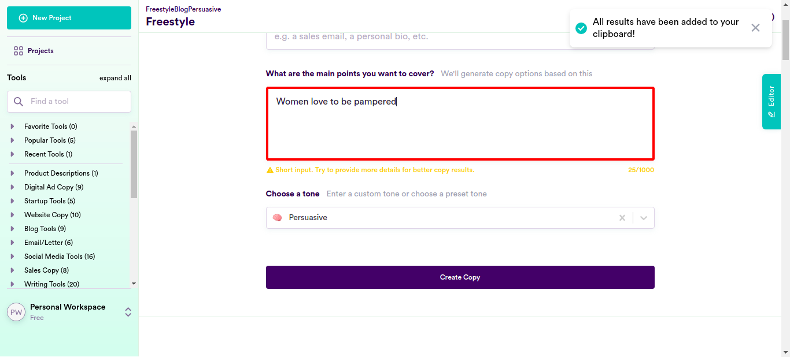check_circle 12:57:44 PM enterData
Entered Value "Material things such as your looks, personality, style and clothes are all important if you want to attract women." in BlogFreestyleSentencecheck_circle 12:58:09 PM enterData
Entered Value "Every woman has a deep emotional and psychological need to fulfill their fantasies, whether it be on a sexual, emotional, or material level." in BlogFreestyleSentencecheck_circle 12:58:34 PM enterData
Entered Value "Your girlfriend is always telling you she wants “nothing”, never believe that for a second. " in BlogFreestyleSentence
check_circle 12:58:58 PM enterData
Entered Value "every girl wants something" in BlogFreestyleSentencecheck_circle 12:59:23 PM enterData
Entered Value "a gorgeous piece of necklace is always a hit with every woman." in BlogFreestyleSentencecheck_circle 12:59:47 PM enterData
Entered Value "Necklace is an accessory that a woman can’t resist." in BlogFreestyleSentencecheck_circle 1:00:13 PM enterData
Entered Value "When women are in love, they get all giddy with butterflies, romantic and suddenly have an increasing appetite for sweet candies, chocolate and pastries" in BlogFreestyleSentencecheck_circle 1:00:37 PM enterData
Entered Value "women may not be as fit for operating a loader as men" in BlogFreestyleSentencecheck_circle 1:01:01 PM enterData
Entered Value "Women don't have the experience or training." in BlogFreestyleSentencecheck_circle 1:01:26 PM enterData
Entered Value "I wouldn't want my wife driving one of those cars." in BlogFreestyleSentencecheck_circle 1:01:50 PM enterData
Entered Value "Are women as safe a drivers as men?" in BlogFreestyleSentencecheck_circle 1:02:15 PM enterData
Entered Value "women and power tools don’t mix" in BlogFreestyleSentence
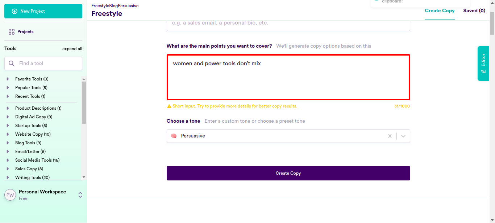check_circle 1:02:39 PM enterData
Entered Value "Women can be easily overpowered" in BlogFreestyleSentence
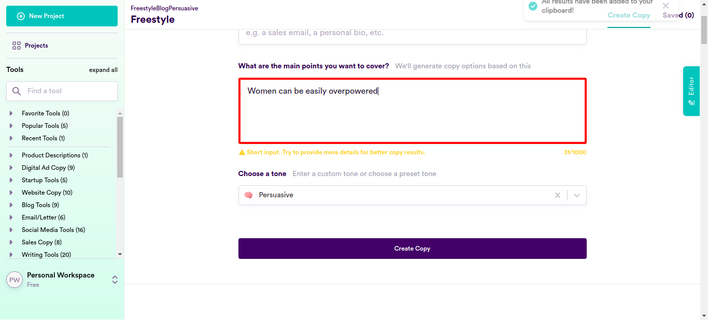check_circle 1:03:04 PM enterData
Entered Value "The streets are no place for a woman should be the warning to all women." in BlogFreestyleSentencecheck_circle 1:03:28 PM enterData
Entered Value "most women are powerless over their environment" in BlogFreestyleSentencecheck_circle 1:03:53 PM enterData
Entered Value "Women's ways are full of deceit and perfidy" in BlogFreestyleSentencecheck_circle 1:04:17 PM enterData
Entered Value "most women prefer men who can protect them and make them feel safe" in BlogFreestyleSentencecheck_circle 1:04:42 PM enterData
Entered Value "women love a man who can protect them" in BlogFreestyleSentencecheck_circle 1:05:06 PM enterData
Entered Value "if you want to be the guy that women are constantly trying to win over, then learn how to defend yourself." in BlogFreestyleSentencecheck_circle 1:05:31 PM enterData
Entered Value "Unless you’re five years old, chances are you can defend her if need be" in BlogFreestyleSentencecheck_circle 1:05:56 PM enterData
Entered Value "there are some women who prefer the ‘never speak’ type" in BlogFreestyleSentencecheck_circle 1:06:20 PM enterData
Entered Value "The most beautiful thing about a woman is her smile" in BlogFreestyleSentencecheck_circle 1:06:45 PM enterData
Entered Value "when it comes to dealing with the bad guys, you cannot rely on a woman to fight them all by herself." in BlogFreestyleSentencecheck_circle 1:07:10 PM enterData
Entered Value "Women like men who can protect them" in BlogFreestyleSentencecheck_circle 1:07:35 PM enterData
Entered Value "men have kept women as their ‘property’ in order to protect and provide for them." in BlogFreestyleSentencecheck_circle 1:07:59 PM enterData
Entered Value "women are better smellers than men too and are more sensitive to smells." in BlogFreestyleSentencecheck_circle 1:08:24 PM enterData
Entered Value "Since time immemorial men have sought to protect their women" in BlogFreestyleSentencecheck_circle 1:08:49 PM enterData
Entered Value "The court of public opinion is stacked against men, especially when it comes to “women" in BlogFreestyleSentencecheck_circle 1:09:14 PM enterData
Entered Value "A woman trained in martial arts can still get defeated by an untrained man." in BlogFreestyleSentencecheck_circle 1:09:38 PM enterData
Entered Value "A skilled martial arts woman gets totally owned by a man with zero training" in BlogFreestyleSentencecheck_circle 1:10:03 PM enterData
Entered Value "I have seen many examples of weak, untrained men beat girls who are skilled in martial arts" in BlogFreestyleSentencecheck_circle 1:10:28 PM enterData
Entered Value "In a male-dominated world, men are naturally more competitive than women" in BlogFreestyleSentencecheck_circle 1:10:53 PM enterData
Entered Value "Women undergo various level of submission at home and in the workplace." in BlogFreestyleSentencecheck_circle 1:11:18 PM enterData
Entered Value "Two fundamental forces, one masculine, the other feminine, and that is what our society is based on." in BlogFreestyleSentence
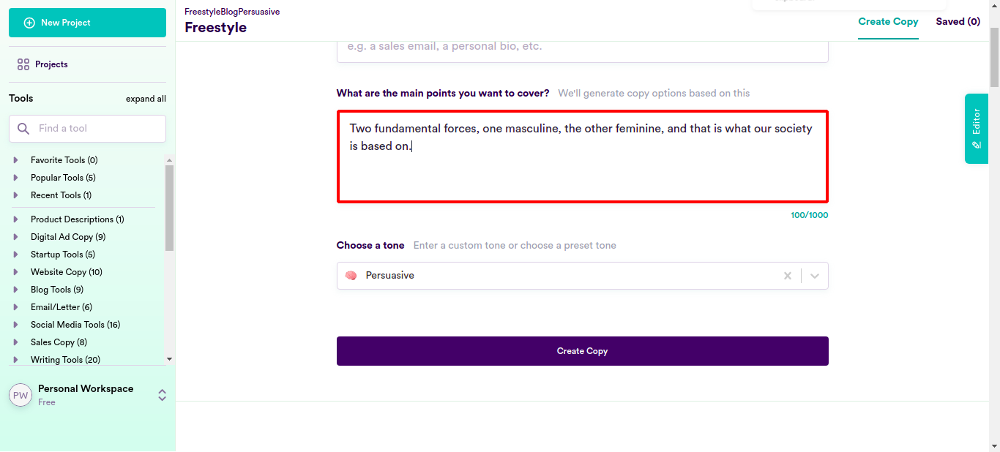check_circle 1:11:42 PM enterData
Entered Value "men love to be in control" in BlogFreestyleSentencecheck_circle 1:12:07 PM enterData
Entered Value "the pseudo-control that beta-males try to fake" in BlogFreestyleSentencecheck_circle 1:12:31 PM enterData
Entered Value "women naturally enjoy surrendering control to a strong and alpha man" in BlogFreestyleSentencecheck_circle 1:12:57 PM enterData
Entered Value "By submitting to and serving a superior male specimen, she can fulfill her biological programming on a deep level." in BlogFreestyleSentencecheck_circle 1:13:22 PM enterData
Entered Value "women are expected to be submissive while men are expected to dominate." in BlogFreestyleSentencecheck_circle 1:13:47 PM enterData
Entered Value "majority of CEOs in large companies are men – and that’s because they have a drive to achieve" in BlogFreestyleSentencecheck_circle 1:14:11 PM enterData
Entered Value "for men domination is a way of life, for women submission is" in BlogFreestyleSentencecheck_circle 1:14:36 PM enterData
Entered Value "Men like domination, women like submission" in BlogFreestyleSentencecheck_circle 1:15:01 PM enterData
Entered Value "Men have a ""dominant gene"" while the women have a ""submissive gene"" in BlogFreestyleSentencecheck_circle 1:15:25 PM enterData
Entered Value "The first thing men learn to do, when they can walk, is walk with assertiveness." in BlogFreestyleSentencecheck_circle 1:15:50 PM enterData
Entered Value "Women are born submissive." in BlogFreestyleSentencecheck_circle 1:16:14 PM enterData
Entered Value "Most are even attracted to dominant men" in BlogFreestyleSentencecheck_circle 1:16:40 PM enterData
Entered Value "Women – they love playing it safe, enjoy mutual assistance and aim to resolve conflicts together." in BlogFreestyleSentence
check_circle 1:17:05 PM enterData
Entered Value "It’s almost impossible nowadays to find a woman who hasn't been affected by romanticized notions of love." in BlogFreestyleSentencecheck_circle 1:17:30 PM enterData
Entered Value "No matter how feminist they may be, most women are consumed by these ideas" in BlogFreestyleSentencecheck_circle 1:17:55 PM enterData
Entered Value "men are also brainwashed into thinking it’s their duty to constantly please the woman in their lives" in BlogFreestyleSentencecheck_circle 1:18:20 PM enterData
Entered Value "Are women worth all that money" in BlogFreestyleSentencecheck_circle 1:18:45 PM enterData
Entered Value "women are particularly vulnerable to “loss aversion,” while men tend to be more open to taking risks." in BlogFreestyleSentencecheck_circle 1:19:09 PM enterData
Entered Value "women continue to be the weaker sex" in BlogFreestyleSentencecheck_circle 1:19:34 PM enterData
Entered Value "women think men are better than them at multitasking" in BlogFreestyleSentencecheck_circle 1:19:59 PM enterData
Entered Value "women continue to be the weaker sex" in BlogFreestyleSentencecheck_circle 1:20:23 PM enterData
Entered Value "women are weak because they are women." in BlogFreestyleSentencecheck_circle 1:20:48 PM enterData
Entered Value "women have a lot of room for improvement in certain areas" in BlogFreestyleSentence
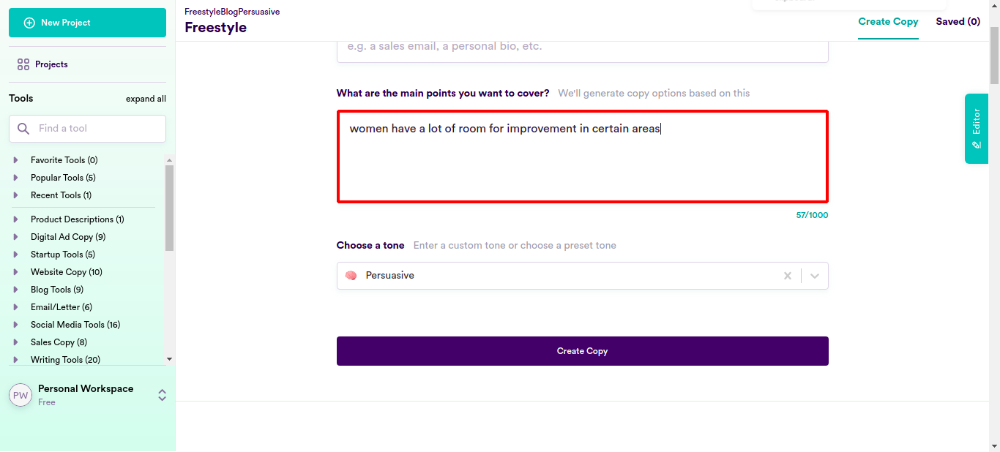check_circle 1:21:13 PM enterData
Entered Value "men continue to be stronger, more resilient and more likely to push themselves further than their female counterparts." in BlogFreestyleSentencecheck_circle 1:21:38 PM enterData
Entered Value "women are always the lesser sex, at least in the case of alcohol." in BlogFreestyleSentencecheck_circle 1:22:03 PM enterData
Entered Value "men will always be the stronger sex." in BlogFreestyleSentencecheck_circle 1:22:27 PM enterData
Entered Value "Women are not as smart or capable as me" in BlogFreestyleSentencecheck_circle 1:22:53 PM enterData
Entered Value "there are women who feel like they look worse than they could look if only they were using the right product" in BlogFreestyleSentencecheck_circle 1:23:17 PM enterData
Entered Value "women use skincare products to look younger" in BlogFreestyleSentencecheck_circle 1:23:42 PM enterData
Entered Value "Ms. RiRi’s booty is a better investment" in BlogFreestyleSentencecancel 1:24:14 PM Exception Occured:Click to see
[java.base/jdk.internal.reflect.NativeConstructorAccessorImpl.newInstance0(Native Method)
java.base/jdk.internal.reflect.NativeConstructorAccessorImpl.newInstance(NativeConstructorAccessorImpl.java:62)
java.base/jdk.internal.reflect.DelegatingConstructorAccessorImpl.newInstance(DelegatingConstructorAccessorImpl.java:45)
java.base/java.lang.reflect.Constructor.newInstance(Constructor.java:490)
org.openqa.selenium.remote.http.W3CHttpResponseCodec.createException(W3CHttpResponseCodec.java:187)
org.openqa.selenium.remote.http.W3CHttpResponseCodec.decode(W3CHttpResponseCodec.java:122)
org.openqa.selenium.remote.http.W3CHttpResponseCodec.decode(W3CHttpResponseCodec.java:49)
org.openqa.selenium.remote.HttpCommandExecutor.execute(HttpCommandExecutor.java:158)
org.openqa.selenium.remote.service.DriverCommandExecutor.execute(DriverCommandExecutor.java:83)
org.openqa.selenium.remote.RemoteWebDriver.execute(RemoteWebDriver.java:552)
org.openqa.selenium.remote.RemoteWebDriver.findElement(RemoteWebDriver.java:323)
org.openqa.selenium.remote.RemoteWebDriver.findElementByXPath(RemoteWebDriver.java:428)
org.openqa.selenium.By$ByXPath.findElement(By.java:353)
org.openqa.selenium.remote.RemoteWebDriver.findElement(RemoteWebDriver.java:315)
jdk.internal.reflect.GeneratedMethodAccessor2.invoke(Unknown Source)
java.base/jdk.internal.reflect.DelegatingMethodAccessorImpl.invoke(DelegatingMethodAccessorImpl.java:43)
java.base/java.lang.reflect.Method.invoke(Method.java:566)
org.openqa.selenium.support.events.EventFiringWebDriver.lambda$new$1(EventFiringWebDriver.java:105)
com.sun.proxy.$Proxy17.findElement(Unknown Source)
org.openqa.selenium.support.events.EventFiringWebDriver.findElement(EventFiringWebDriver.java:194)
org.openqa.selenium.support.pagefactory.DefaultElementLocator.findElement(DefaultElementLocator.java:69)
org.openqa.selenium.support.pagefactory.internal.LocatingElementHandler.invoke(LocatingElementHandler.java:38)
com.sun.proxy.$Proxy21.click(Unknown Source)
com.ttn.WebAutomation.pageObjects.Slack.senddatafromcsv(Slack.java:160)
com.ttn.WebAutomation.tests.tsp.test.clicklogin(test.java:94)
java.base/jdk.internal.reflect.NativeMethodAccessorImpl.invoke0(Native Method)
java.base/jdk.internal.reflect.NativeMethodAccessorImpl.invoke(NativeMethodAccessorImpl.java:62)
java.base/jdk.internal.reflect.DelegatingMethodAccessorImpl.invoke(DelegatingMethodAccessorImpl.java:43)
java.base/java.lang.reflect.Method.invoke(Method.java:566)
org.testng.internal.MethodInvocationHelper.invokeMethod(MethodInvocationHelper.java:134)
org.testng.internal.TestInvoker.invokeMethod(TestInvoker.java:597)
org.testng.internal.TestInvoker.invokeTestMethod(TestInvoker.java:173)
org.testng.internal.MethodRunner.runInSequence(MethodRunner.java:46)
org.testng.internal.TestInvoker$MethodInvocationAgent.invoke(TestInvoker.java:816)
org.testng.internal.TestInvoker.invokeTestMethods(TestInvoker.java:146)
org.testng.internal.TestMethodWorker.invokeTestMethods(TestMethodWorker.java:146)
org.testng.internal.TestMethodWorker.run(TestMethodWorker.java:128)
java.base/java.util.ArrayList.forEach(ArrayList.java:1541)
org.testng.TestRunner.privateRun(TestRunner.java:766)
org.testng.TestRunner.run(TestRunner.java:587)
org.testng.SuiteRunner.runTest(SuiteRunner.java:384)
org.testng.SuiteRunner.runSequentially(SuiteRunner.java:378)
org.testng.SuiteRunner.privateRun(SuiteRunner.java:337)
org.testng.SuiteRunner.run(SuiteRunner.java:286)
org.testng.SuiteRunnerWorker.runSuite(SuiteRunnerWorker.java:53)
org.testng.SuiteRunnerWorker.run(SuiteRunnerWorker.java:96)
org.testng.TestNG.runSuitesSequentially(TestNG.java:1187)
org.testng.TestNG.runSuitesLocally(TestNG.java:1109)
org.testng.TestNG.runSuites(TestNG.java:1039)
org.testng.TestNG.run(TestNG.java:1007)
com.intellij.rt.testng.IDEARemoteTestNG.run(IDEARemoteTestNG.java:66)
com.intellij.rt.testng.RemoteTestNGStarter.main(RemoteTestNGStarter.java:109)]cancel 1:24:14 PM clicklogin FAILED cancel 1:24:14 PM org.openqa.selenium.NoSuchElementException: no such element: Unable to locate element: {"method":"xpath","selector":"//button[normalize-space()='Copy All Results']"} (Session info: chrome=96.0.4664.110) For documentation on this error, please visit: https://www.seleniumhq.org/exceptions/no_such_element.html Build info: version: '3.141.59', revision: 'e82be7d358', time: '2018-11-14T08:17:03' System info: host: 'ttnpl', ip: '127.0.1.1', os.name: 'Linux', os.arch: 'amd64', os.version: '5.4.0-94-generic', java.version: '11.0.13' Driver info: org.openqa.selenium.chrome.ChromeDriver Capabilities {acceptInsecureCerts: false, browserName: chrome, browserVersion: 96.0.4664.110, chrome: {chromedriverVersion: 96.0.4664.45 (76e4c1bb2ab46..., userDataDir: /tmp/.com.google.Chrome.D6Rnel}, goog:chromeOptions: {debuggerAddress: localhost:32941}, javascriptEnabled: true, networkConnectionEnabled: false, pageLoadStrategy: normal, platform: LINUX, platformName: LINUX, proxy: Proxy(), setWindowRect: true, strictFileInteractability: false, timeouts: {implicit: 0, pageLoad: 300000, script: 30000}, unhandledPromptBehavior: dismiss and notify, webauthn:extension:credBlob: true, webauthn:extension:largeBlob: true, webauthn:virtualAuthenticators: true} Session ID: 8142e3e0027f5ffaf3fc85ac3ca5761c *** Element info: {Using=xpath, value=//button[normalize-space()='Copy All Results']} at java.base/jdk.internal.reflect.NativeConstructorAccessorImpl.newInstance0(Native Method) at java.base/jdk.internal.reflect.NativeConstructorAccessorImpl.newInstance(NativeConstructorAccessorImpl.java:62) at java.base/jdk.internal.reflect.DelegatingConstructorAccessorImpl.newInstance(DelegatingConstructorAccessorImpl.java:45) at java.base/java.lang.reflect.Constructor.newInstance(Constructor.java:490) at org.openqa.selenium.remote.http.W3CHttpResponseCodec.createException(W3CHttpResponseCodec.java:187) at org.openqa.selenium.remote.http.W3CHttpResponseCodec.decode(W3CHttpResponseCodec.java:122) at org.openqa.selenium.remote.http.W3CHttpResponseCodec.decode(W3CHttpResponseCodec.java:49) at org.openqa.selenium.remote.HttpCommandExecutor.execute(HttpCommandExecutor.java:158) at org.openqa.selenium.remote.service.DriverCommandExecutor.execute(DriverCommandExecutor.java:83) at org.openqa.selenium.remote.RemoteWebDriver.execute(RemoteWebDriver.java:552) at org.openqa.selenium.remote.RemoteWebDriver.findElement(RemoteWebDriver.java:323) at org.openqa.selenium.remote.RemoteWebDriver.findElementByXPath(RemoteWebDriver.java:428) at org.openqa.selenium.By$ByXPath.findElement(By.java:353) at org.openqa.selenium.remote.RemoteWebDriver.findElement(RemoteWebDriver.java:315) at jdk.internal.reflect.GeneratedMethodAccessor2.invoke(Unknown Source) at java.base/jdk.internal.reflect.DelegatingMethodAccessorImpl.invoke(DelegatingMethodAccessorImpl.java:43) at java.base/java.lang.reflect.Method.invoke(Method.java:566) at org.openqa.selenium.support.events.EventFiringWebDriver.lambda$new$1(EventFiringWebDriver.java:105) at com.sun.proxy.$Proxy17.findElement(Unknown Source) at org.openqa.selenium.support.events.EventFiringWebDriver.findElement(EventFiringWebDriver.java:194) at org.openqa.selenium.support.pagefactory.DefaultElementLocator.findElement(DefaultElementLocator.java:69) at org.openqa.selenium.support.pagefactory.internal.LocatingElementHandler.invoke(LocatingElementHandler.java:38) at com.sun.proxy.$Proxy21.click(Unknown Source) at com.ttn.WebAutomation.pageObjects.Slack.senddatafromcsv(Slack.java:160) at com.ttn.WebAutomation.tests.tsp.test.clicklogin(test.java:94) at java.base/jdk.internal.reflect.NativeMethodAccessorImpl.invoke0(Native Method) at java.base/jdk.internal.reflect.NativeMethodAccessorImpl.invoke(NativeMethodAccessorImpl.java:62) at java.base/jdk.internal.reflect.DelegatingMethodAccessorImpl.invoke(DelegatingMethodAccessorImpl.java:43) at java.base/java.lang.reflect.Method.invoke(Method.java:566) at org.testng.internal.MethodInvocationHelper.invokeMethod(MethodInvocationHelper.java:134) at org.testng.internal.TestInvoker.invokeMethod(TestInvoker.java:597) at org.testng.internal.TestInvoker.invokeTestMethod(TestInvoker.java:173) at org.testng.internal.MethodRunner.runInSequence(MethodRunner.java:46) at org.testng.internal.TestInvoker$MethodInvocationAgent.invoke(TestInvoker.java:816) at org.testng.internal.TestInvoker.invokeTestMethods(TestInvoker.java:146) at org.testng.internal.TestMethodWorker.invokeTestMethods(TestMethodWorker.java:146) at org.testng.internal.TestMethodWorker.run(TestMethodWorker.java:128) at java.base/java.util.ArrayList.forEach(ArrayList.java:1541) at org.testng.TestRunner.privateRun(TestRunner.java:766) at org.testng.TestRunner.run(TestRunner.java:587) at org.testng.SuiteRunner.runTest(SuiteRunner.java:384) at org.testng.SuiteRunner.runSequentially(SuiteRunner.java:378) at org.testng.SuiteRunner.privateRun(SuiteRunner.java:337) at org.testng.SuiteRunner.run(SuiteRunner.java:286) at org.testng.SuiteRunnerWorker.runSuite(SuiteRunnerWorker.java:53) at org.testng.SuiteRunnerWorker.run(SuiteRunnerWorker.java:96) at org.testng.TestNG.runSuitesSequentially(TestNG.java:1187) at org.testng.TestNG.runSuitesLocally(TestNG.java:1109) at org.testng.TestNG.runSuites(TestNG.java:1039) at org.testng.TestNG.run(TestNG.java:1007) at com.intellij.rt.testng.IDEARemoteTestNG.run(IDEARemoteTestNG.java:66) at com.intellij.rt.testng.RemoteTestNGStarter.main(RemoteTestNGStarter.java:109)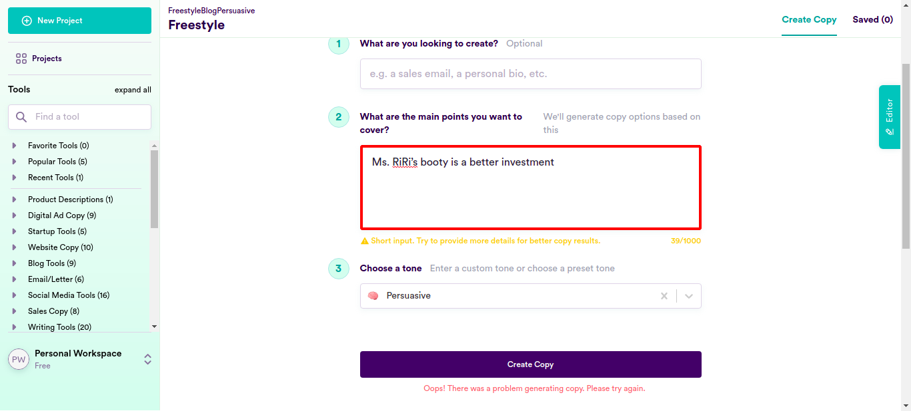cancel 1:24:15 PM NoSuchElementException info_outline 1:24:15 PM Test Completed cancel 1:24:15 PM clicklogin - Test Case Failed cancel 1:24:15 PM org.openqa.selenium.NoSuchElementException: no such element: Unable to locate element: {"method":"xpath","selector":"//button[normalize-space()='Copy All Results']"} (Session info: chrome=96.0.4664.110) For documentation on this error, please visit: https://www.seleniumhq.org/exceptions/no_such_element.html Build info: version: '3.141.59', revision: 'e82be7d358', time: '2018-11-14T08:17:03' System info: host: 'ttnpl', ip: '127.0.1.1', os.name: 'Linux', os.arch: 'amd64', os.version: '5.4.0-94-generic', java.version: '11.0.13' Driver info: org.openqa.selenium.chrome.ChromeDriver Capabilities {acceptInsecureCerts: false, browserName: chrome, browserVersion: 96.0.4664.110, chrome: {chromedriverVersion: 96.0.4664.45 (76e4c1bb2ab46..., userDataDir: /tmp/.com.google.Chrome.D6Rnel}, goog:chromeOptions: {debuggerAddress: localhost:32941}, javascriptEnabled: true, networkConnectionEnabled: false, pageLoadStrategy: normal, platform: LINUX, platformName: LINUX, proxy: Proxy(), setWindowRect: true, strictFileInteractability: false, timeouts: {implicit: 0, pageLoad: 300000, script: 30000}, unhandledPromptBehavior: dismiss and notify, webauthn:extension:credBlob: true, webauthn:extension:largeBlob: true, webauthn:virtualAuthenticators: true} Session ID: 8142e3e0027f5ffaf3fc85ac3ca5761c *** Element info: {Using=xpath, value=//button[normalize-space()='Copy All Results']} - Test Case Failed
-
-
info_outline
check_circle
cancel
cancel
error
warning
redo
clear
Exceptions
-
org.openqa.selenium.NoSuchElementException
1
Timestamp
TestName
Status
Jan 25, 2022 12:41:51
Running on Chrome.test.clicklogin
org.openqa.selenium.NoSuchElementException: no such element: Unable to locate element: {"method":"xpath","selector":"//button[normalize-space()='Copy All Results']"}
(Session info: chrome=96.0.4664.110)
For documentation on this error, please visit: https://www.seleniumhq.org/exceptions/no_such_element.html
Build info: version: '3.141.59', revision: 'e82be7d358', time: '2018-11-14T08:17:03'
System info: host: 'ttnpl', ip: '127.0.1.1', os.name: 'Linux', os.arch: 'amd64', os.version: '5.4.0-94-generic', java.version: '11.0.13'
Driver info: org.openqa.selenium.chrome.ChromeDriver
Capabilities {acceptInsecureCerts: false, browserName: chrome, browserVersion: 96.0.4664.110, chrome: {chromedriverVersion: 96.0.4664.45 (76e4c1bb2ab46..., userDataDir: /tmp/.com.google.Chrome.D6Rnel}, goog:chromeOptions: {debuggerAddress: localhost:32941}, javascriptEnabled: true, networkConnectionEnabled: false, pageLoadStrategy: normal, platform: LINUX, platformName: LINUX, proxy: Proxy(), setWindowRect: true, strictFileInteractability: false, timeouts: {implicit: 0, pageLoad: 300000, script: 30000}, unhandledPromptBehavior: dismiss and notify, webauthn:extension:credBlob: true, webauthn:extension:largeBlob: true, webauthn:virtualAuthenticators: true}
Session ID: 8142e3e0027f5ffaf3fc85ac3ca5761c
*** Element info: {Using=xpath, value=//button[normalize-space()='Copy All Results']}
at java.base/jdk.internal.reflect.NativeConstructorAccessorImpl.newInstance0(Native Method)
at java.base/jdk.internal.reflect.NativeConstructorAccessorImpl.newInstance(NativeConstructorAccessorImpl.java:62)
at java.base/jdk.internal.reflect.DelegatingConstructorAccessorImpl.newInstance(DelegatingConstructorAccessorImpl.java:45)
at java.base/java.lang.reflect.Constructor.newInstance(Constructor.java:490)
at org.openqa.selenium.remote.http.W3CHttpResponseCodec.createException(W3CHttpResponseCodec.java:187)
at org.openqa.selenium.remote.http.W3CHttpResponseCodec.decode(W3CHttpResponseCodec.java:122)
at org.openqa.selenium.remote.http.W3CHttpResponseCodec.decode(W3CHttpResponseCodec.java:49)
at org.openqa.selenium.remote.HttpCommandExecutor.execute(HttpCommandExecutor.java:158)
at org.openqa.selenium.remote.service.DriverCommandExecutor.execute(DriverCommandExecutor.java:83)
at org.openqa.selenium.remote.RemoteWebDriver.execute(RemoteWebDriver.java:552)
at org.openqa.selenium.remote.RemoteWebDriver.findElement(RemoteWebDriver.java:323)
at org.openqa.selenium.remote.RemoteWebDriver.findElementByXPath(RemoteWebDriver.java:428)
at org.openqa.selenium.By$ByXPath.findElement(By.java:353)
at org.openqa.selenium.remote.RemoteWebDriver.findElement(RemoteWebDriver.java:315)
at jdk.internal.reflect.GeneratedMethodAccessor2.invoke(Unknown Source)
at java.base/jdk.internal.reflect.DelegatingMethodAccessorImpl.invoke(DelegatingMethodAccessorImpl.java:43)
at java.base/java.lang.reflect.Method.invoke(Method.java:566)
at org.openqa.selenium.support.events.EventFiringWebDriver.lambda$new$1(EventFiringWebDriver.java:105)
at com.sun.proxy.$Proxy17.findElement(Unknown Source)
at org.openqa.selenium.support.events.EventFiringWebDriver.findElement(EventFiringWebDriver.java:194)
at org.openqa.selenium.support.pagefactory.DefaultElementLocator.findElement(DefaultElementLocator.java:69)
at org.openqa.selenium.support.pagefactory.internal.LocatingElementHandler.invoke(LocatingElementHandler.java:38)
at com.sun.proxy.$Proxy21.click(Unknown Source)
at com.ttn.WebAutomation.pageObjects.Slack.senddatafromcsv(Slack.java:160)
at com.ttn.WebAutomation.tests.tsp.test.clicklogin(test.java:94)
at java.base/jdk.internal.reflect.NativeMethodAccessorImpl.invoke0(Native Method)
at java.base/jdk.internal.reflect.NativeMethodAccessorImpl.invoke(NativeMethodAccessorImpl.java:62)
at java.base/jdk.internal.reflect.DelegatingMethodAccessorImpl.invoke(DelegatingMethodAccessorImpl.java:43)
at java.base/java.lang.reflect.Method.invoke(Method.java:566)
at org.testng.internal.MethodInvocationHelper.invokeMethod(MethodInvocationHelper.java:134)
at org.testng.internal.TestInvoker.invokeMethod(TestInvoker.java:597)
at org.testng.internal.TestInvoker.invokeTestMethod(TestInvoker.java:173)
at org.testng.internal.MethodRunner.runInSequence(MethodRunner.java:46)
at org.testng.internal.TestInvoker$MethodInvocationAgent.invoke(TestInvoker.java:816)
at org.testng.internal.TestInvoker.invokeTestMethods(TestInvoker.java:146)
at org.testng.internal.TestMethodWorker.invokeTestMethods(TestMethodWorker.java:146)
at org.testng.internal.TestMethodWorker.run(TestMethodWorker.java:128)
at java.base/java.util.ArrayList.forEach(ArrayList.java:1541)
at org.testng.TestRunner.privateRun(TestRunner.java:766)
at org.testng.TestRunner.run(TestRunner.java:587)
at org.testng.SuiteRunner.runTest(SuiteRunner.java:384)
at org.testng.SuiteRunner.runSequentially(SuiteRunner.java:378)
at org.testng.SuiteRunner.privateRun(SuiteRunner.java:337)
at org.testng.SuiteRunner.run(SuiteRunner.java:286)
at org.testng.SuiteRunnerWorker.runSuite(SuiteRunnerWorker.java:53)
at org.testng.SuiteRunnerWorker.run(SuiteRunnerWorker.java:96)
at org.testng.TestNG.runSuitesSequentially(TestNG.java:1187)
at org.testng.TestNG.runSuitesLocally(TestNG.java:1109)
at org.testng.TestNG.runSuites(TestNG.java:1039)
at org.testng.TestNG.run(TestNG.java:1007)
at com.intellij.rt.testng.IDEARemoteTestNG.run(IDEARemoteTestNG.java:66)
at com.intellij.rt.testng.RemoteTestNGStarter.main(RemoteTestNGStarter.java:109)
org.openqa.selenium.NoSuchElementException
1
| Timestamp | TestName | Status |
|---|---|---|
| Jan 25, 2022 12:41:51 | Running on Chrome.test.clicklogin | |
Dashboard
Classes
1
Tests
1
Steps
106
Start
Jan 25, 2022 12:41:44
End
Jan 25, 2022 13:24:15
Time Taken
2,551,072ms
Environment
| Name | Value |
|---|---|
| Application Name | Demo |
| User Name | Demo |
| Environment | uat |
| OS | Linux |